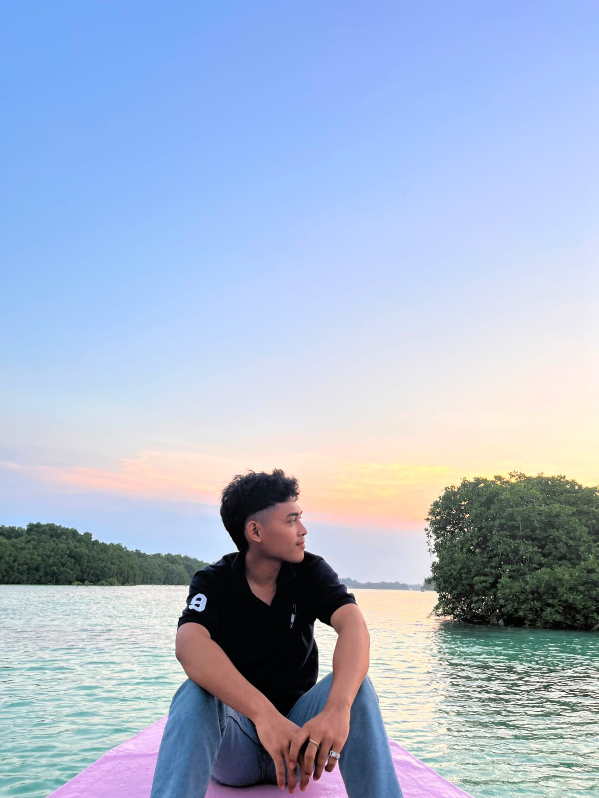

Wahid Sofiana
Mahasiswa yang sedang belajar teknologi dan pemrograman web.
Biodata Lengkap
Nama: Wahid Sofiana
Tempat, tanggal lahir: Gunungkidul 2007 08 02
Jenis kelamin: Laki laki
Alamat: Ciseeng
Pendidikan: STT Terpadu Nurul Fikri
Hobi: Belajar teknologi dan coding
Cita-cita: Menjadi programmer profesional
Email: wahidsofian012@gmail.com
Tentang Saya
Nama saya Wahid Sofiana. Saya sedang mempelajari teknologi informasi dan pengembangan website. Saya belajar menggunakan HTML dan CSS untuk membuat halaman web yang rapi, menarik, dan mudah digunakan.
Saya ingin terus meningkatkan kemampuan di bidang pemrograman. Saya berusaha memahami setiap materi melalui latihan dan praktik secara langsung agar dapat membuat website dan aplikasi sendiri.
Video
Berikut adalah video yang berkaitan dengan kegiatan atau pembelajaran saya.
Tambahkan file video bernama video.mp4 di folder Praktikum3/foto.
Koleksi Foto

Ganti foto dengan koleksi foto milik Anda sendiri.
Download File
Unduh file profil atau CV saya melalui tautan berikut.
Download CVCurriculum Vitae (CV)
Wahid Sofiana
Profil: Mahasiswa yang tertarik pada teknologi informasi dan pemrograman web.
Data Diri
Nama: Wahid Sofiana
Email: wahidsofian012@gmail.com
Program Studi: Teknik Informatika
Pendidikan
STT Terpadu Nurul Fikri
Keterampilan
- HTML dasar
- Visual Studio Code
- Pemrograman web dasar
Pengalaman Proyek
- Membuat halaman web menggunakan HTML.
- Membuat layout halaman web menggunakan IFRAME dan HTML5.